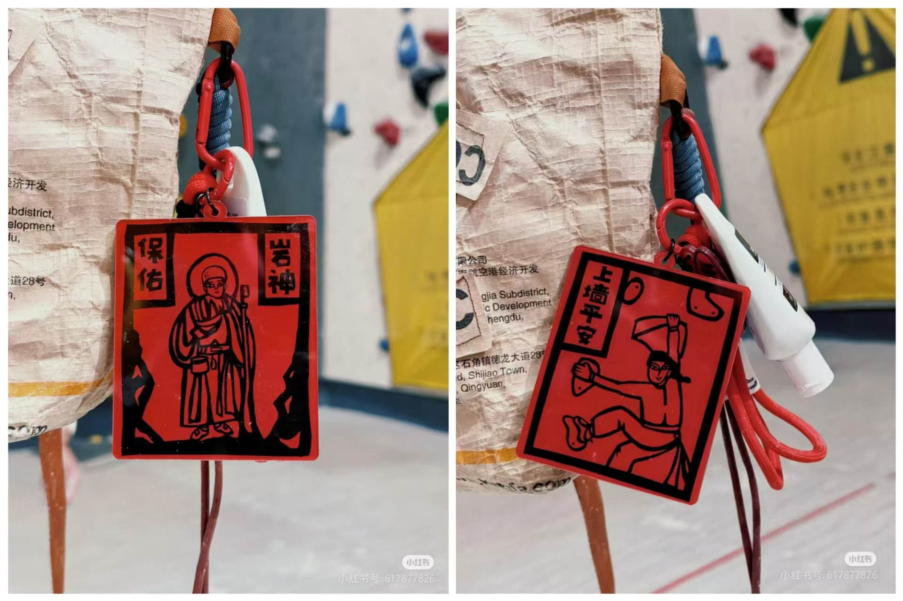

Hi！恭喜你发现了这份以有趣为主（非专业性）的设计手记！
小G在这里记录下了“岩神”的前世今生。“岩神”是由小G独立完成了全流程设计的。从突发奇想，到认真开始考虑可行性和实现方式，再到芯片选择、电路设计、网页设计，再到最后的外观设计，每一步都由小G主导。新手上路，每一步都是深思熟虑后的小心试探，也因此每一步都有不少收获。小G非常感谢Z院士和H院士在电路和网页设计方面的帮助和建议。“岩神”能够以如此优雅的状态被呈现出来，二位院士功不可没。
设计手记从以下方面展开，点击跳转~
1、灵感来源 2、硬件设计 3、网页设计 4、电路焊接 5、成品测试 6、经费计算 7、使用说明公元2024年10月3日下午，小G躺在床上享受着美妙的十一假期。她刷着小红书，欣赏着各路神仙的攀岩视频。
一次不经意的下滑后，屏幕中出现了一个攀岩主题红色方形亚克力挂件，由“宁宁做梦世多”设计，图案生动有趣，并配有“岩神保佑”“上墙平安”等字样。小G一眼看中了挂件的图案，非常喜欢。在评论区了解到这是甲马（2017年列入非物质文化遗产），起源于云南，用于民间祈福，寓意美好，更加心动。
考虑到直接购买价格较贵（bushi），工科生小G向来喜欢动手，有着想要的东西自己做的习惯。她决定在挂件上加入电子元素，用电路板制作一款会发光的岩神挂件。
最容易想到的供电方式就是干电池供电、typeC接线供电。这两种方法虽然常规，但是在体积小、重量轻的挂件设计上使用会严重影响美观程度，排除。
这时，小G想起了自己曾在“智能卡系统”课上神游，逛JLC开源平台时，受到启发脑洞大开想到的NFC供电。NFC供电优越性在于其所需电路结构非常简单，就是线圈连NFC芯片，易于实现。且供电方式为手机NFC为挂件线圈无线供电，无需额外连接设备，外形美观。好想法，就它了！
小G想：非电子相关专业的人可能会对于卡片上不设电池供电，岩神的眼睛却在发光的现象感到惊讶吧:)
小G开始积极寻找NFC芯片，但能找到的大多太难焊（QFN封装）、焊上太丑、太贵（好几块钱一个），而且需要使用读卡器才能读写卡片。小G认为它们不符合一个小挂件的应有成本价格标准，并不满意。经过一晚上的全网搜索，她发现了廉价好物CUID芯片贴纸、NTAG21x贴纸（碰碰贴）。它们外形优美，读写仅需具有NFC功能的手机即可。
购买贴纸甚至连NFC芯片的线圈都不用自己画了，只需在板子上画LED和对应的线圈，相当于直接购买了电路的核心功能实现部分。小G认为不必太纠结是否全部电路都由自己设计（毕竟她以前也没少抄别人的板子）。不过，在这样的情况下，仅仅让岩神的眼睛能发光就显得有些无聊了。小G仔细查阅两种芯片贴纸的说明，发现NTAG贴纸不仅可以制作门禁，还有控制播放歌曲、显示文字、跳转到至网页等新鲜玩法。果断选择NTAG215芯片贴纸，并决定在芯片中写入自己写的网页。
在电路设计方面，小G曾与H院士、Z院士就NFC电路的设计细节展开过讨论。
小G对于LED的功率、颜色及可以带动几个LED等小问题均有了解。困扰她的关键问题是“线圈是圈数越多越好，还是应该计算后画成特定的与NFC匹配的样子”。
Z院士建议匹配。具体方法为：先用微波实验中的方法在ADS进行版图仿真，得到所画线圈的Z参数，计算出电感，再通过已知的NFC信号频率13.56MHz计算出谐振电容值，通过LC谐振电路尽可能多地接收电磁波能量。小G很认可这个方法，但此法实在是太繁琐了，不确定因素过多，调整起来实在费时费力。小G又追问了若干次实操时会遇到的问题，得到了很多次令人满意的满意答复“不好说，你试试，xx不行就换成xx嘛（笑声）”。H院士也笑眯眯地夸奖道：“小G可是最擅长仿真的”。小G全懂了。
于是，小G“思路清晰”地开始画PCB。她熟练地处理起顶层底层丝印图片，仔细地将电路走线藏在丝印下方，尽可能提高美观度。至于刚刚讨论过的线圈问题，只见她随意地画着圈，顶层底层都画了几圈后，接在了LED上。切，就这点频率，做什么仿真，小G坚信线圈差不多就能用。自信的小G飞快地画好了电路板，毫不犹豫地点击下单。
既然小G已决定要自己写一个网站作为礼物的一部分，那么需要解决的问题就很清晰：网页如何部署。
众本行人士所周知，如果想让自己写的网页被别人通过浏览器访问，需要购买域名，或是将网页部署到云服务器上。这两种方式的共同点是都要花不少钱，这显然不符合小G的心意。经过资料查阅，小G发现利用Gitee或Github都能免费部署自己的网页，喜出望外，立即写起了网页。
小G优先选择了Gitee，支持国产。她对CSDN上的教程言听计从，下载Git，驯服Git，并尝试使用Git上传了一个html文件。但她发现让大家能够访问网页需要进行实名认证。小G甚至特意跑回宿舍，手持身份证进行了认证。本以为后面就是等待认证通过即可，但第二天，小G看到了大量Gitee实名认证时间过长的信息，大失所望，越看越生气。一气之下，她直接点开了GitHub。小G没有梯子，她竟然登录进去了！一顿操作猛如虎，这里不需要实名认证，仅花费十分钟就部署好了网页。
小G向两位院士宣布了这个好消息后，开开心心地将网页URL写入了小贴纸（芯片标签），还玩了好久小贴纸的其他功能。
等板子的这几天里，小G每天都在疯狂地刷新JLC下单平台的物流信息，一边刷一遍默念“板来，板来，板从四面八方来”和“再也不选红色阻焊了”。终于，在4天后，她收到了心心念念的板子。
晚上，小G迫不及待地约上H院士、Z院士去焊接。小G拿出一片电路板和她购买的一条0603贴片LED，深吸一口气…这LED看起来实在是太小了，似乎比芝麻粒还要小一些，后悔当时没买0805的。考虑到如果焊接上第一个LED后不能点亮，可能是焊接问题、电路问题、二极管方向问题（后来仔细思考后发现不会有方向问题），难以判断。小G非常紧张，犹豫了许久才开始焊接。幸运的是，她想象中的意外情况都没有发生。电路焊接完成后，用手机NFC试探，LED以令人惊讶的亮度发光。小G非常激动，和岩神一样两眼放光。
由于小G在学校里没有钳子，在安装钥匙扣的时候只能用一个脆弱的镊子、一具区区肉身与不锈钢开口环抗衡（硬掰）……不幸中的万幸大概是攀岩人的指力是不可估量的，开口环最终完美闭合:)
小G的荣耀手机NFC发射功率似乎格外的强。只要把岩神放在手机上，岩神就会一直发光。甚至仅有电路板的岩神紧贴手机也可以亮起；贴了NFC芯片的岩神离手机有一段距离，小灯也可以亮起。S同学的手机也很好用，但没有记录下品牌or型号。
H院士的苹果手机NFC发射功率就要弱很多，需要把岩神紧贴在手机上，来回移动，才能识别NFC标签。Z院士的小米手机效果相近。
虽然识别的灵敏度在不同手机之间存在差异，但当前测试过的手机都能完全实现功能。这次设计至此可以宣告成功咯！
我可真是个省钱小能手！论1元可以做些什么↓
（1）打开手机NFC功能
（2）在手机【亮屏】状态下，将挂件贴在手机NFC区上
（3）看！岩神眼睛在发光！（没看到就重新刷卡）
（4）手机弹出网页链接，点击进入！
如前文所述，NTAG标签不仅可以设置为跳转到链接，还可以设置为其他有趣的功能。如果想要自己设置挂件的功能，可以下载“NFC Tools Pro”探索使用方法，其中的部分功能需要结合“NFC Tasks”软件才能设置。两款软件均可通过浏览器搜索下载。使用“NFC Tools Pro”可写入如下功能：
在自主探索之前，请务必记录一下摸大鱼导航网址：
https://gukaiyan.github.io/RockClimbing/info.html
否则就再也不能读到这篇设计手记啦！